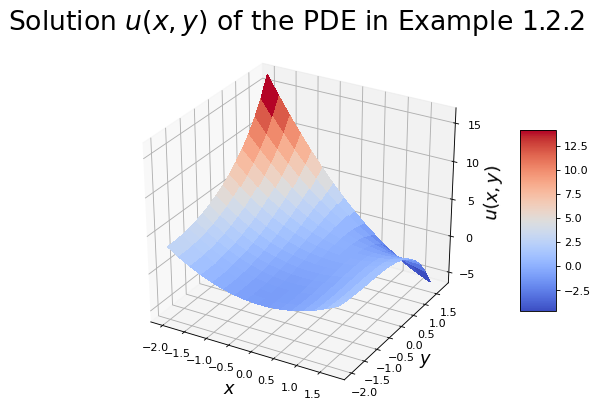

1.3 Introduction to PDEs#
In many physical applications, the dependent variable depends on more than one independent variable. Given that we live in a physical space of three spatial dimensions and one time dimension, many functions are functions of four variables, and we would write \(\displaystyle u=u(x,y,z,t)\), where \(x, y\) and \(z\) are the usual Cartesian co-ordinate space variables and \(t\) is the time.
If \(u\) depends on the two variables \(x\) and \(t\), i.e. \(u=u(x,t)\), then any derivatives with respect to \(x\) or \(t\), will be partial derivatives, and so any differential equation involving \(u\) will contain partial derivatives, and is called a partial differential equation. For example
Similarly, if \(\displaystyle T=T(x,y,z,t)\) then an example of a partial differential equation involving \(T\) might be
Partial differential equations are an important area of theoretical physics and applied mathematics. Maxwell’s equations govern electromagnetic wave propagation; Einstein’s field equations occur in the general theory of relativity; Schrodinger’s wave equation is important in quantum mechanics; the Navier-Stokes equations govern fluid flow; the equation \(\displaystyle \frac{\partial^2T}{\partial{x^2}}+\frac{\partial^2T}{\partial{y^2}}+\frac{ \partial^2T}{\partial{z^2}} = \frac{1}{\kappa}\frac{\partial{T}}{\partial{t}} \) governs the flow of heat in a homogeneous isotropic material, etc.
To solve a differential equation is to express the dependent variable in terms of the independent variables. For example the solution of the wave equation
is given by
where \(F\) and \(G\) are arbitrary functions.
The order of the partial differential equation is the order of the highest partial derivative that it contains. For example,
is a second order PDE, and
is of order four.
It can be shown that the general solution of an \(n\)th order partial differential equation contains \(n\) arbitrary functions.
Solution by direct integration#
The simplest ordinary differential equations (ODEs) such as \(\displaystyle \frac{\mathrm{d}^2u}{\mathrm{d}x^2}=F(x)\) can be solved by direct integration.
Example 10
If
then
This is the general solution of the ODE containing the two arbitrary constants, \(A\) and \(B\). The values of these constants may be found if the solution must satisfy other conditions.
If, for example, the solution to the above equation must also satisfy the inital conditions \(u(0)=5\) and \(u'(0)=0\) then we have that \(A=0\) and \(B=5\), giving the particular solution \(u=x^2+5\).
In a similar fashion, certain partial differential equations may be solved by direct integration. For example, given that \(u=u(x,t)\) then the solution of the partial differential equation
may be found as follows. Integrate with respect to \(x\), to obtain
Integrating again w.r.t. \(x\) gives
This is the general solution to the given partial differential equation. Note that it contains two arbitrary functions, as required for a second order partial differential equation.
Example 11
Given that \(u=u(x,y)\): (a) find the general solution to the partial differential equation
and (b) find the particular solution, which satisfies \(u(0,y)=\sin{y}\).
Integrating gives
This is the general solution. We are told that \(u(0,y)=\sin{y}\), and therefore
this means that \(F(y)=\sin{y}\) and the particular solution required is
We plot this solution below using python (click the tab to see the code).

Solving PDEs like ODEs#
When a PDE involves only derivatives with respect to one variable (or can be transformed to such a form) we can solve using the techniques of ODEs, treating the other variables as parameters.
Example 12
Find solutions \(\displaystyle u = u(x,y)\) of the PDE \(\displaystyle u_{xx}-u=0\)
Since no \(y\) derivatives occur we can solve this as
which has axuillary equation (using the anzatz \(\displaystyle u = A(y)e^{\lambda x}\))
so that solutions are of the form
Solutions partly known#
On occasions, when solving a partial differential equation, the solution may be partly known. Often this information reduces a partial differential equation to an ordinary differential equation, which can then be solved in the usual fashion.
Example 13
Find the solution of the IBVP
which satisfies the conditions \(z(0,t)=0\) and \(z(x,0)=4\sin{3x}\), given that the solution is of the form
The approach used is to find the derivatives appearing in the partial differential equation in terms of \(F(x)\) and its derivatives, then to substitute these into the given partial differential equation and solve the resulting ordinary differential equation. We are given that
therefore
Substituting this into the given equation gives
Thus the unknown function \(F(x)\) satisfies the ordinary differential equation
This is a linear homogeneous second order ordinary differential equation with constant coefficients. The auxiliary equation is \(m^2+9=0\), with roots \(m=\pm{3i}\). The solution is therefore given by
The solution to the partial differential equation is therefore
Applying the given conditions we have
Therefore
Imposing the second condition gives
The required solution is given by \(z(x,t)=4\sin(3x)e^{-2t}\).
Example 14
Assuming a solution of the form \(\displaystyle u(x,y) = y^\alpha f(x)\), where \(\displaystyle \alpha\in\mathbb{R}\), solve the following PDE
We have that
so (8) becomes
or
Since \(\displaystyle y^\alpha f(x)\neq 0\) we must have that
or \(\displaystyle \alpha_1 = 1\) and \(\displaystyle \alpha_2=-2\).
Thus we have two solutions
and since the PDE is linear and homogeneous we can derive a general solution as a linear combination of \(u_1\) and \(u_2\) as
Note
We can check the validity of the above solution via direct substitution.
Firstly note that
substituting this into (8) gives
as required.